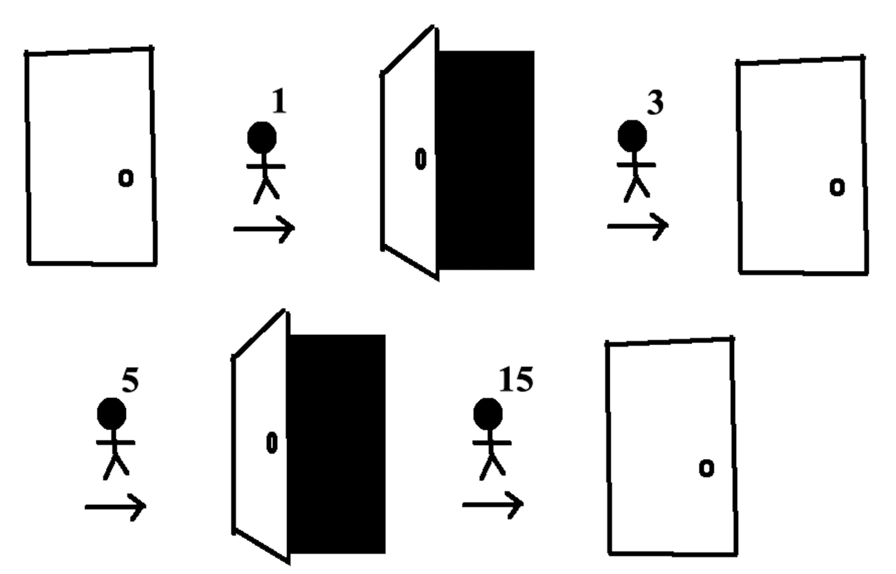
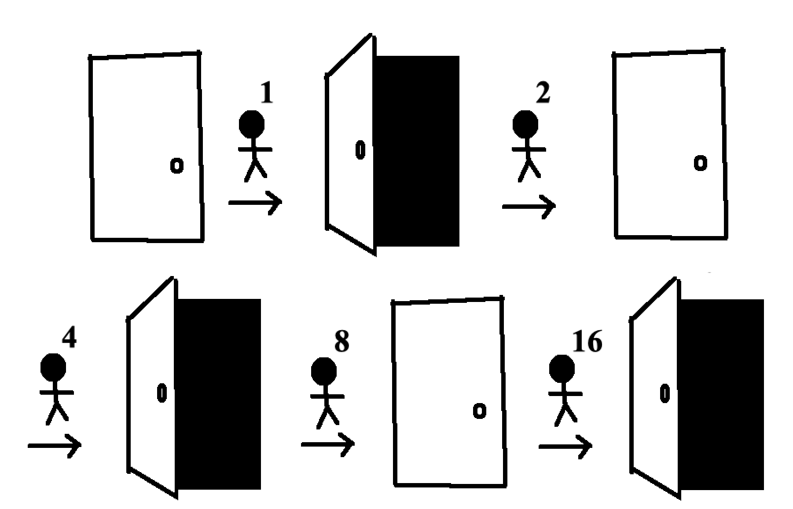

Only thirty-one doors end up open: doors 1, 4, 9, 16, 25, and all the other perfect squares less than a thousand. Why do only these doors end up open?
In a nutshell, for any given door, \begin{align*} \text{door ends up open} &\iff \text{door is flipped an odd number of times}\\ &\iff \text{door number has an odd number of factors}\\ &\iff \text{door number is a perfect square.} \end{align*}
To see how the number of times a door gets flipped is the same as the number of factors for that door's number, consider which people flip Door #15.
fig. 5 The first, third, fifth, and fifteenth people flip Door #15, leaving it closed
Door #15 gets flipped four times by the people corresponding to 15's factors (1, 3, 5, and 15). In general, the number of times a door is flipped is the number of factors for that door's number.
Now consider Door #16.
fig. 6 The first, second, fourth, eighth, and sixteenth people flip Door #16, leaving it open
16 has five factors (1, 2, 4, 8, and 16). Most numbers have an even number of factors, but perfect squares like 16 are an exception since one of their factors is a square root.
So whether a door ends up open or closed comes down to whether it's flipped an even or odd number of times, which comes down to whether the door's number has an even or odd number of factors. Perfect squares are the only numbers with an odd number of factors (since their square roots lack accompanying factors). That's why only the thirty-one doors corresponding to perfect squares end up open in this problem.Here's all that more formally:
Proposition 1. The \(n^{th}\) person in line flips door \(m\) if and only if \(n\) is a factor of \(m.\)
Proof: Let \(n\in\mathbb{N}\) be a factor of \(m\in\mathbb{N}.\) Then \(nk=m\) for some \(k\in\mathbb{N}.\) Since person \(n\) flips every \(n^{th}\) door, the \(k^{th}\) door person \(n\) flips is door \(m\). For the converse, suppose \(n\) is not a factor of \(m\) and person \(n\) flips door \(m\). Since person \(n\) only flips every \(n^{th}\) door, there exists some \(k\) such that \(nk=m.\) This contradicts \(n\) not being a factor of \(m\).
Proposition 2. If a closed door is flipped an even number of times then it ends up closed. Also, if a closed door is flipped an odd number of times then it ends up open.
Proof: Just think about it idk
Proposition 3. If a number has an odd number of unique factors, it's a perfect square.
Proof: We show the contrapositive. Let \(n\) be a positive integer that is not a perfect square and let \(S=s_1, s_2, \ldots, s_k\) be the set of \(n\)'s unique factors. Suppose for contradiction \(k\) is odd. Then there exists no partition of \(S\) into two subsets of the same cardinality. So \(n\) must have an integer square root, contradicting its construction as not a perfect square.
By proposition 1, the the number of times a door \(m\) is flipped is the same as the number of unique factors \(m\) has. Then by proposition 2, door \(m\) ends up open if and only \(m\) has an odd number of unique factors. Finally by proposition 3, door \(m\) ends up open if and only if \(m\) is a perfect square.
\(\square\)
(Many thanks to my friend Maria for posing this problem on a road trip and to my colleague Drew for finding the solution before me.
6/27/19